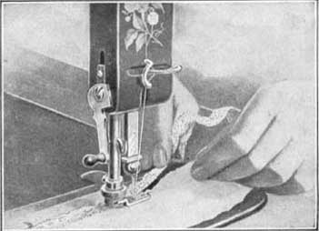
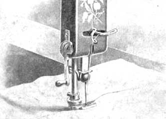
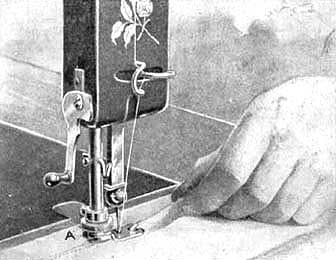
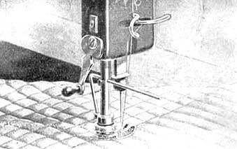

Online Manuals Section
FOR USING THE
FLAT TENSION, VIBRATING SHUTTLE
NEW HOME
SERIES A
SEWING MACHINE
INSTRUCTIONS
FOR USING THE
FOOT HEMMER AND FELLER
Hemming
Raise the needle to its highest point and raise the presser foot to its first lift by turning the lifter to the right. Loosen the nut A, take off the presser foot and replace with the Hemmer. Set same to its right place and fasten nut A by turning to the left. Raise the presser bar by turning the presser foot lifter to the right, and pass the edge of the cloth into the hemmer in the manner shown in the illustration, drawing it through the hemmer as far as the needle hole, in order that the feed may be at once catch the cloth. Then let the hemmer down upon the feed surface, and operate the machine as usual. Should the goods begin to run out of the hemmer, carry them to the Right; should too much run into the hemmer, carry the goods to the Left. About one-fourth of an inch in width is as much of the goods as is usually required to form a perfect hem. If the stitch takes the hem too far from the edge, turn the hemmer a little to the Right. If, on the contrary, the stitch does not catch the edge of the hem, turn the hemmer a little to the Left.

ILLUSTRATING HEMMING WITH FOOT HEMMER AND FELLER
Felling
Sew the two edges of the cloth together, the under one projecting one-fourth of an inch beyond the upper; then open out the work and crease the seam down, the wide edge over the narrow edge. Draw the wide folded edge into the hemmer, the same as if were a hem, and drop the foot, Then guide the fold edge, and work the machine the same as in ordinary hemming. A wider fell requires a wider seam, which is turned the same as a wider hem.

ILLUSTRATING FELLING WITH FOOT HEMMER AND FELLER

To Hem and Sew on Lace
Put the edge of the fabric into the hemmer. When the hem is well started, raise hemmer foot by means of the presser lifter and also raise the needle. Then pass the lace through slot in the side of the hemmer, carrying it back under the hemmer on top of the hem. Proceed as in ordinary hemming, keeping lace well in the side.

Quilting
Insert the quilter through the small hole in the presser bar, and fasten with the screw in the back of presser bar, moving it to the right or lest to the required width of the rows of stitching. Raise or lower the quilter according to the thickness of the goods. Having made the first row the desired distance from the edge place the work so that this row will be under and in line with the lower edge of the quilter, which will form a guide for each row of stitching; the last row made always passing under and in line with the quilter while stitching the next.